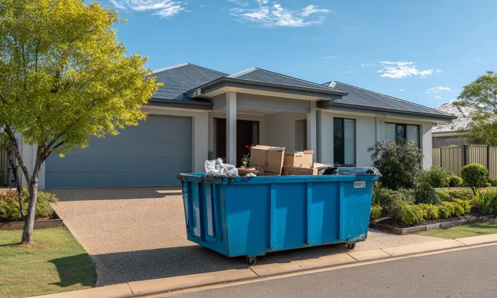
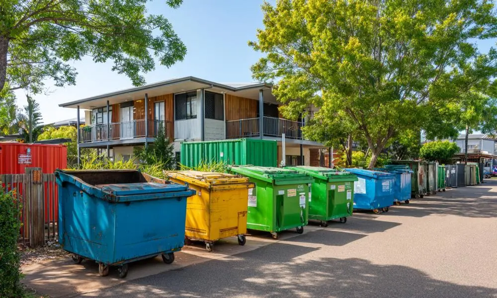

Skip Bin Rockhampton Solutions
Moving House & Decluttering Projects
One of the most common reasons people book skip bin hire Rockhampton is when preparing to move house. Relocating often uncovers years of unused furniture, damaged household items, broken appliances, old toys, and general rubbish that no longer serves a purpose. Rather than making multiple trips to disposal facilities, a skip bin provides a central location where unwanted materials can be collected throughout the packing process. Many homeowners find that having a skip bin onsite helps speed up decluttering while creating a cleaner and more organised property before settlement or handover.
Garden & Green Waste Removal
Green waste skip bins Rockhampton are frequently used after major yard cleanups, landscaping projects, seasonal maintenance, and storm recovery work. Branches, leaves, grass clippings, shrubs, palm fronds, and other organic materials can quickly accumulate and become difficult to manage using standard council bins. Dedicated green waste skip bins allow property owners to remove large volumes of garden material efficiently while keeping outdoor areas safe, tidy, and easier to maintain throughout the year.
Home Renovation Projects
Bathroom upgrades, kitchen remodels, flooring replacements, and home extensions often create more waste than many people expect. Timber, plasterboard, tiles, cabinetry, packaging materials, and demolition debris can pile up quickly during construction work. Rockhampton skip bin hire services help homeowners and contractors keep renovation areas clear of waste while reducing safety risks around the worksite. Having the right skip bin available also makes it easier to maintain project efficiency from start to finish.
Rental Property & End Of Lease Cleanouts
Property managers and landlords often require skip bins when preparing a property for new tenants. End-of-lease cleanups may involve abandoned furniture, damaged household goods, old mattresses, mixed rubbish, and outdoor waste left behind by previous occupants. Skip bins Rockhampton QLD customers use for rental property cleanouts can help restore a property faster and reduce delays between tenancy periods.
Commercial & Construction Waste Management
Businesses, tradespeople, builders, and contractors regularly use Rockhampton skip bins for warehouse cleanouts, office refurbishments, retail fit-outs, construction projects, and ongoing waste management. Commercial projects often generate bulky materials that cannot be handled through standard waste collection services. A suitable skip bin provides a practical disposal solution while helping businesses maintain cleaner, safer, and more productive working environments.
How To Choose The Right Skip Bin Size?
Choosing the right skip bin size can help reduce costs, avoid overfilling, and make waste removal more efficient. Many customers searching for mini skip bins Rockhampton only need a smaller bin for household rubbish, garden waste, or minor renovation work. Larger projects such as home extensions, commercial cleanouts, and building site waste generally require larger skip bins to accommodate greater waste volumes. Estimating the amount of rubbish before booking helps customers avoid paying for excess capacity while ensuring enough space is available to complete the project without interruption.
Benefits Of Hiring A Skip Bin
Many people initially consider transporting rubbish themselves, but multiple trips to disposal facilities often consume more time and money than expected. Hiring a skip bin allows waste to be collected in one location throughout the project rather than loading and unloading vehicles repeatedly. Skip bin hire Rockhampton services can help reduce fuel expenses, minimise vehicle wear and tear, improve site safety, and eliminate the inconvenience of arranging multiple disposal trips. For larger cleanup projects, renovations, and commercial jobs, having a skip bin onsite is often the most practical and efficient waste management solution.
What Influences Skip Bin Prices In Rockhampton
Skip bin prices Rockhampton customers pay can vary depending on several factors. Bin size is usually one of the largest pricing considerations, with larger bins costing more than smaller options due to increased capacity and disposal requirements. Waste type also affects pricing, because green waste, mixed household rubbish, construction materials, and commercial waste often involve different processing costs. Delivery location, hire duration, accessibility, and local disposal fees may also contribute to overall pricing. Customers searching for cheap skip bin Rockhampton solutions can often achieve better value by selecting the correct waste category and booking a bin size that closely matches their actual project requirements.
Helping Rockhampton Customers Find The Right
Many customers are unsure which skip bin size they need, what materials can be disposed of, or how different waste categories affect pricing. Our goal is to help homeowners, landlords, builders, and businesses identify suitable options before booking. Whether you need mini skip bins Rockhampton for a small household cleanup, green waste skip bins Rockhampton for landscaping work, or larger bins for construction projects, choosing the right solution from the beginning can help improve project efficiency and reduce unnecessary waste management costs. We focus on providing practical guidance so customers can make informed decisions based on project size, waste volume, and disposal requirements.

Frequently Asked Questions
How much are skip bin prices in Rockhampton?
Skip bins Rockhampton prices vary based on bin size, waste category, rental period, delivery requirements, and disposal costs. Smaller bins are generally more affordable than larger commercial or construction bins.
What is the cheapest skip bin Rockhampton option?
The cheapest skip bins Rockhampton customers hire are often smaller bins used for light household rubbish and green waste projects. Choosing an appropriately sized bin can help avoid paying for unused capacity.
Do you offer mini skip bins Rockhampton customers can use for small projects?
Yes. Mini skip bins are commonly used for garage cleanouts, garden maintenance, furniture disposal, and minor renovation projects where waste volumes are relatively low.
Can green waste be placed into a skip bin?
Green waste skip bins Rockhampton services are specifically designed for organic materials such as branches, grass clippings, shrubs, leaves, and other garden waste generated during landscaping and yard maintenance projects.
What size skip bin is best for a household cleanup?
The best size depends on the amount of rubbish being removed. Small household cleanups may only require a mini skip bin, while larger decluttering projects, furniture disposal, and moving house often require additional capacity.